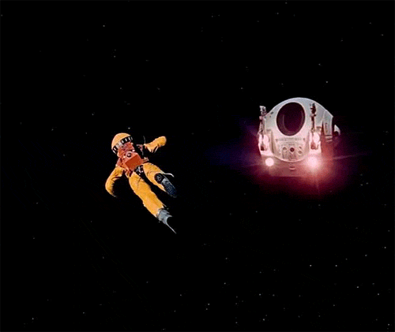
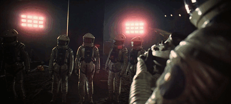
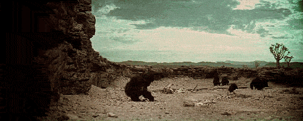
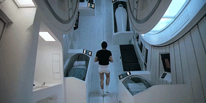
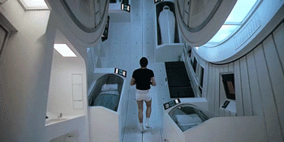
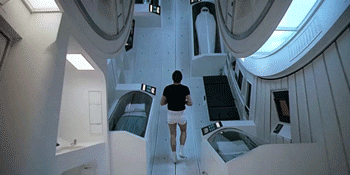

2OO1: A SPACE ODYSSEY
Pure ambition
A little while after the release of Dr. Strangelove, Kubrick starting working on his next project: a film adaptation of Arthur C. Clark’s 2OO1: A Space Odyssey. A very ambitious project (at the time) due to the immensive amount of required special effects. Kubrick, using state of the art camera equipment and a variety of lens techniques.
I very quickly kindled an admiration for his work-ethic as he dedicated hundreds of hours reading a variety of books related to the source material in preparation for the shoots.



 

